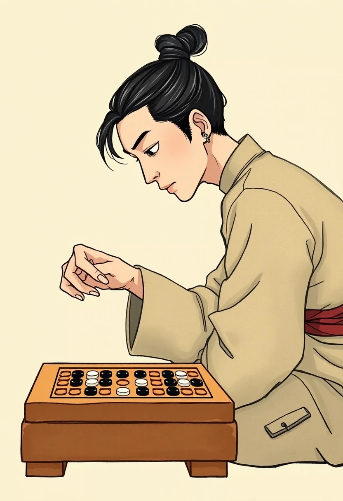

Kieran Chung 鍾呈至
Founder and CEO of Thesary. I build AI agents that do investment research, and the PM makes the call.
Explore my work
Work and background
Go
My first time letting a machine think: a Go project, around when AlphaGo played Lee Sedol in 2016.
I took up AI-style openings as soon as AlphaGo appeared, about two years before strong players switched at scale. In 1.4 million games I analysed, the direct 3-3 invasion went from under 1% of strong amateur games in 2016 to 23% in 2018, and to about 27% of Japanese pro games from 2020.
I reached Elo 2300, learning with a personal tutor. There is no official record of it.
Poker
I play poker the way a quant researcher works a market: I mine the small, repeatable mistakes the player pool makes against theory, flop class by flop class, and exploit them. In Taiwan TMT events I finish in the money 30% of the time.
A transformer trained on 3M+ poker hand histories: 74% out-of-sample accuracy predicting player actions. And a GTO trainer that finds a player’s leaks.
Markets
Joined Dragon Pacific Capital, a Shenzhen macro quant firm, as an operations intern in June 2024; on the research team by August. Now running my own strategy on a sleeve of its All-Weather portfolio, with AI research agents.
I tried to hack a better S&P 500 by letting a model tilt its weights; I did most of the work, with Patrick Ridge as co-author. Picking stocks did not work out of sample. Sizing the tilt did: a reinforcement-learning policy earned 67% more alpha than a fixed tilt at the same risk (information ratio +0.58). An earlier version reported 1.87. It was wrong, and I would rather publish a smaller number that holds.
The road not taken
I turned down an offer to be a Financial Agents Engineer at a top AI lab in China, to build Thesary.
EBK
EBK is an AI-native trading firm I co-founded with Saif. For more information, contact me.
D+A Strategies
Took D+A Strategies’ Asia region from zero to 250+ of the network’s 600 members.
Algothon 2026
Won Jump Trading’s Best Algorithm by First Years at an Algothon with 700+ applicants and CV-screened admission, competing alongside PhDs and people who had interned at top quant firms.
I was the team’s quant trader and algo developer, and owned the strategy end to end: statistical arbitrage, co-integrated pairs and EWMA dip buying, for both directional trading and market making.
The team: Ayomide Ojediran (quant developer), Aayan Zangie (quant researcher) and Kyan Cassidy (trader).
Thesary
Thesary is the operating system for an asset manager’s research workflow, so they can unhobble their investment system.